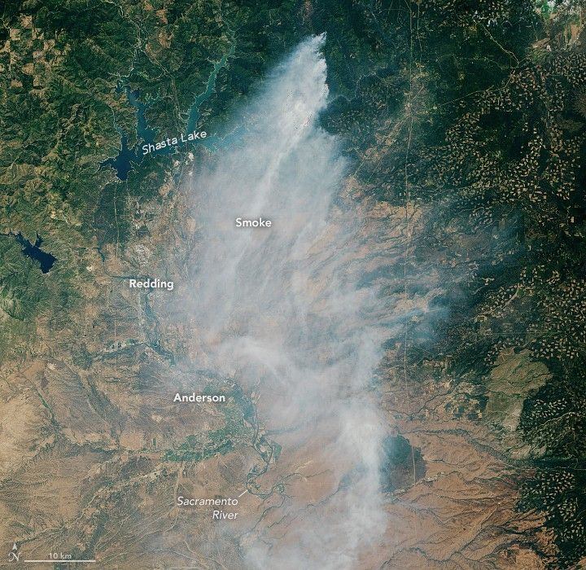

Wildfire Smoke Billows Over Northern California
Several large wildland fires burned in Northern California in mid-July 2025 amid exceptional heat and low humidity. Notable blazes included the Green and Butler fires, visible in images captured by the OLI (Operational Land Imager) on the Landsat 8 satellite on July 13.
On July 1, lightning ignited the Green fire north of the Pit River arm of Shasta Lake. By July 13, the blaze had grown to 10,334 acres (4,182 hectares), according to the U.S. Forest Service. The wide view shows smoke billowing south, contributing to unhealthy air quality around the lake and in communities along the Sacramento River from Redding to Anderson, according to the interagency air quality monitoring tool AirNow. The detailed image shows the active fire area; bright orange indicates the infrared signature of actively burning fires.
A detailed view of the first image shows the active fire area. The infrared signature of actively burning fires appears bright orange, primarily across the right half of the scene. Gray-white smoke surrounded by green forested land occupies most of the image. A few arms of a green-blue lake are visible to the left.
Meanwhile, approximately 120 kilometers (75 miles) to the northwest, the Butler fire was burning in the Six Rivers National Forest east of Orleans. When Landsat 8 captured this image on July 13, the blaze had burned 7,203 acres, according to the U.S. Forest Service. Smoke plumes billowed west over Orleans and also drifted east of the blaze. NASA’s TEMPO (Tropospheric Emissions: Monitoring of Pollution) sensor also observed nitrogen dioxide air pollution from the fire throughout the day.
Smoke from the Butler fire forms a distinct plume across the middle of the image, with diffuse plumes toward the top-right and bottom-left. The terrain is green and mountainous, with several brown, bare areas.
Weather conditions at the time were favorable for fire, with temperatures climbing over 100°F and humidity dropping below 20%. By mid-week, conditions improved somewhat as temperatures dropped below 100°F and humidity increased slightly.
As of July 16, the fires had expanded to 15,438 acres (Green) and 9,191 acres (Butler), with 13% and 0% containment, respectively. Evacuation orders and warnings persisted in several zones in Shasta County near the Green fire and expanded to include new zones, such as the area around Forks of Salmon, near the Butler fire.
These fires and others can be tracked using NASA tools such as the Fire Information for Resource Management System (FIRMS), Worldview, and the Fire Events Explorer.